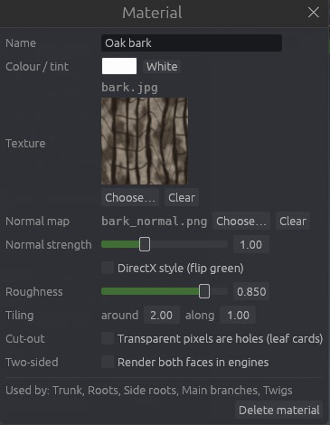

Materials and textures
Each tree has a library of materials. A material has a colour, an optional colour texture and normal map, and settings for game engines. Any number of generators can share one material; generators without a material use the tree's default bark or leaf colour.
Creating and assigning a material
- Select the generator that should use the material, for example the trunk.
- Click + Material in the left panel. ArborStudio creates a bark or leaf material, depending on the generator, assigns it to the selected generator and opens the material editor.
- To use the same material on other generators, select each of them and choose the material in the Material menu at the top of the Properties panel.
To edit a material later, click it in the Materials list, or click Edit… next to the Material menu of a generator that uses it.

Material settings
- Name
- Used as the material name in exports.
- Colour / tint
- The base colour. With a texture, it tints the texture; use white to show the texture unchanged.
- Texture
- A colour image in PNG or JPEG format. Click Choose… to select it and Clear to remove it.
- Normal map
- A tangent-space normal map in PNG or JPEG format. It adds surface detail to the lighting in the viewport and is exported for engines.
- Normal strength 0 to 4
- How strongly the normal map bends the lighting. 1 shows the map as painted.
- DirectX style (flip green)
- Select this for normal maps whose green channel points down (DirectX convention). glTF and ArborStudio expect the OpenGL convention with green pointing up. If the bark looks lit from the wrong side, toggle this setting.
- Roughness 0 to 1
- Surface roughness for physically based shading in engines. Bark is usually close to 1.
- Tiling: around, along 0.05 to 50
- How often a bark texture repeats around each stem (around) and along it (along).
- Cut-out
- Transparent pixels of the texture become holes. Use it for leaf cards.
- Two-sided
- Asks engines to render both faces. Leaf materials are always exported as two-sided.
The line Used by lists the generators that use the material. Delete material removes it; those generators return to the default colours.
How bark textures are mapped
A bark texture wraps once around each stem for each unit of around tiling. Along the stem it repeats once per circumference of the stem at that point, multiplied by the along tiling. This keeps the texture's proportions on thick trunks and thin twigs alike: the bark pattern is smaller on thin branches, as on a real tree. The circumference is measured on the actual surface, including buttress flare and flutes.
Texture coordinates continue across joints, so the bark of a branch flows into its collar.


samples/ that you can use to try materials out.Leaf textures
- Select the leaves generator and set its Shape to Card (for leaf textures).
- Click + Material, choose a PNG leaf texture with transparency and select Cut-out.
- Set the colour to white to show the texture's own colours, or tint it.
Each card shows the whole texture, so a texture with several leaves makes a dense crown from fewer cards.
Textures in exports
- GLB files contain the textures, so the export is a single file.
- OBJ exports copy the textures next to the
.objfile and reference them from the.mtlfile. - The normal map is exported with its strength, and the colour is exported as the base colour factor.